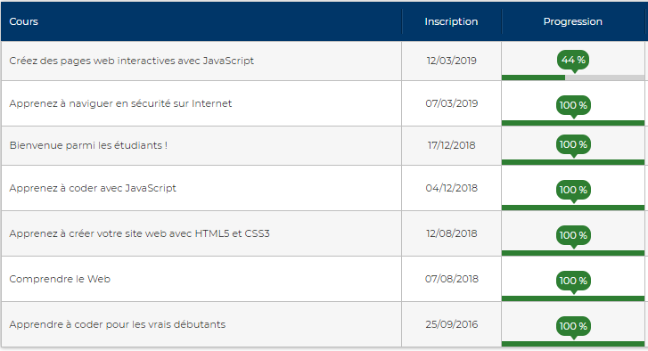

Bienvenue !
Ce site a été créé pour me présenter moi et mes compétences actuelles en matière de dévelopement web:
Mini bio:
Je m'appelle Alexis, j'ai 21 ans, je suis originaire de Brest et mon objectif est d'être développeur web (frontend)
Mon parcours:
Après un baccalauréat ST2S je décidais de me tourner vers un BTS SIO. Très vite déçu par la formation et n'ayant
plus l'envie de continuer dans le système scolaire classique. Je me tourne aujourd'hui vers le modèle de formation en solo & en entreprise
que propose OpenClassrooms, bien plus adaptée à mon mode de fonctionnement.
Mes compétences
Je pratique quotidiennement en HMTL5, CSS3 et JavaScript. J'ai de bonnes bases en C# et je possède quelques
connaissances en mySQL, Python, réseau etc provenant du BTS. Je travaille à la fois sur environnement Windows et Linux (Unbuntu). Je me sers également
d'un bon nombre de technologies succeptibles d'être utilisées en entreprise (Git/GitHub, Filezila, plusieurs logiciels de bureautiques etc)
Pour l'avenir
Comme dit précedemment mon but est de devenir développeur web, spécialisé FrontEnd. C'est pourquoi
je cherche aujourd'hui une entreprise pour une formation OpenClassrooms en alternance d'une durée de 1 à 2 ans. Plusieurs formations sont possibles,
à voir selon les besoins. N'hésitez pas à me contacter pour avoir des renseignements sur le fonctionnement de leurs formations.
Pour vous faire une idée, voici une liste de certains cours que j'ai suivi. A noter que seuls les cours OpenClassrooms sont ici:

Voici également le lien du contenu de chacun de ces cours:
Créez des pages webs interactives avec JS En cours au moment de création de ce site.
Sécurité sur Internet Petit cours rapide très basique.
Apprenez à coder avec JavaScript
Créer un site web avec HTML5/CSS3
Le code pour les vrais débutants Bases absolues de la programmation en C#, fais il y a 2-3 ans (avant le BTS)
N'hésitez pas à me contacter si vous avez des questions ou une proposition :
Téléphone: 06 86 94 15 21
Mail: alexis.delattre99@gmail.com
GitHub: 4lexID